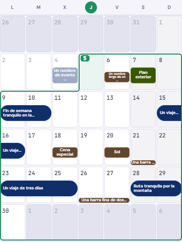
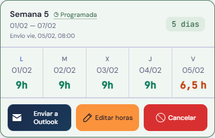

Títulos de un día y acciones con color · v551

Si el título de un evento grande de un día se recorta, aparece «…» en una tercera línea. Las barras finas siguen usando una línea, y las de dos días conservan su formato.

Los tres botones mantienen la misma anchura y altura. Editar horas y Cancelar tienen fondo de color, con texto e iconos contrastados.
Ejemplos ficticios. Comprobados a 320, 400 y 440 px, los tres temas de Home y la distribución del calendario durante el swipe. Se mantienen las confirmaciones de edición y el envío manual.
Se conservan las demás capturas y revisiones del mapa.